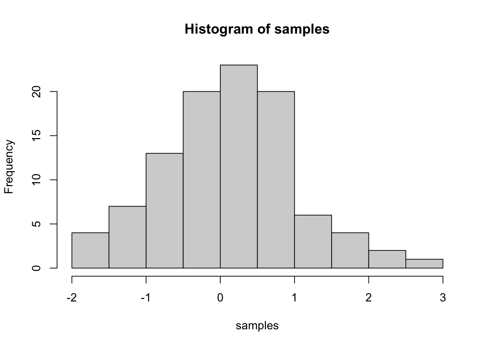

Journal (reproducible report)
Lotta Kursula
2020-11-05
IMPORTANT: You can delete everything in here and start fresh. You might want to start by not deleting anything above this line until you know what that stuff is doing.
This is an .Rmd file. It is plain text with special features. Any time you write just like this, it will be compiled to normal text in the website. If you put a # in front of your text, it will create a top level-header.
1 My first post
Last compiled: 2020-12-05
Notice that whatever you define as a top level header, automatically gets put into the table of contents bar on the left.
1.1 Second level header
You can add more headers by adding more hashtags. These won’t be put into the table of contents
1.1.1 third level header
Here’s an even lower level header
2 My second post (note the order)
Last compiled: 2020-12-05
I’m writing this tutorial going from the top down. And, this is how it will be printed. So, notice the second post is second in the list. If you want your most recent post to be at the top, then make a new post starting at the top. If you want the oldest first, do, then keep adding to the bottom
3 Adding R stuff
So far this is just a blog where you can write in plain text and serve your writing to a webpage. One of the main purposes of this lab journal is to record your progress learning R. The reason I am asking you to use this process is because you can both make a website, and a lab journal, and learn R all in R-studio. This makes everything really convenient and in the same place.
So, let’s say you are learning how to make a histogram in R. For example, maybe you want to sample 100 numbers from a normal distribution with mean = 0, and standard deviation = 1, and then you want to plot a histogram. You can do this right here by using an r code block, like this:
samples <- rnorm(100, mean=0, sd=1)
hist(samples)
When you knit this R Markdown document, you will see that the histogram is printed to the page, along with the R code. This document can be set up to hide the R code in the webpage, just delete the comment (hashtag) from the cold folding option in the yaml header up top. For purposes of letting yourself see the code, and me see the code, best to keep it the way that it is. You’ll learn that all of these things and more can be customized in each R code block.
4 Challenge 1
#Libraries----
library(tidyverse)
library(readxl)
library(lubridate)
#Load xlxs----
bike_orderlines_wrangled_tbl <- read_excel("/Users/Lotta/Documents/Data Science/DS_101/00_data/01_bike_sales/02_wrangled_data/bike_orderlines.xlsx")
#sales by location----
bikecity_orderlines_wrangled_tbl <- bike_orderlines_wrangled_tbl %>%
separate(col = "location",
into = c("city", "state"),
sep = ",",
convert = T)
bikecity_orderlines_wrangled_tbl%>%
group_by(state)%>%
summarise(total_sales = sum(sales))%>%
mutate(sales_text = scales::dollar(total_sales, big.mark = ".",
decimal.mark = ",",
prefix = "",
suffix = " €"))%>%
ggplot(aes(x=state,y=total_sales)) +
geom_col(fill = "#CC99FF") +
scale_y_continuous(labels = scales::dollar_format(big.mark = ".",
decimal.mark = ",",
prefix = "",
suffix = " €")) +
theme(axis.text.x = element_text(angle = 45, hjust = 1)) +
labs(
title = "Revenue by state",
x = "",
y = "Revenue"
)
#sales by location and year----
bikecity_orderlines_wrangled_tbl%>%
select(state,order_date,sales)%>%
mutate(year = year(order_date))%>%
group_by(year,state)%>%
summarise(total_sales = sum(sales))%>%
mutate(sales_text = scales::dollar(total_sales, big.mark = ".",
decimal.mark = ",",
prefix = "",
suffix = " €"))%>%
ggplot(aes(x=year,y=total_sales), fill = state) +
geom_col(fill = "#CC99FF") +
facet_wrap(~ state) +
scale_y_continuous(labels = scales::dollar_format(big.mark = ".",
decimal.mark = ",",
prefix = "",
suffix = " €")) +
theme(axis.text.x = element_text(angle = 45, hjust = 1)) +
labs(
title = "Revenue by state and year",
x = "",
y = "Revenue"
)
5 Challenge 2
# API Random taco ----
library(httr)
library(jsonlite)
library(tidyverse)
resp <- GET("http://taco-randomizer.herokuapp.com//random/?full-taco=true")
taco_random <- rawToChar(resp$content) %>%
fromJSON()
taco_random## $name
## [1] "Swiss Chard Tacos"
##
## $mixin_url
## NULL
##
## $slug
## [1] "swiss_chard_tacos"
##
## $base_layer
## $base_layer$name
## [1] "Swiss Chard"
##
## $base_layer$recipe
## [1] "Swiss Chard\n===========\n\nThis is actually a Rick Bayless recipe from his cookbook _Mexican Everyday_, but we've used it a fair amount on those days we feel like not eating meat but still want to have tacos.\n\n__Ingredients__\n\n* 1 bunch swiss or rainbow chard. Could also do spinach I guess. Probably not good with kale.\n* 1 onion sliced thin\n* 1/2 cup of chicken or vegetable broth\n\nSlice up the chard into small slices. In a large skillet, heat the oil on medium-high. Cook the onions until soft, plus some garlic and red pepper flakes if you want. Put the chard in the skillet, add the broth. Cover the pan and reduce the heat to medium-low and cook until the greens are wilted and almost tender (about 5 minutes). Uncover, bring heat back to medium high and cook until almost dry. Salt as necessary. Enjoy.\n\ntags: vegetarian\n"
##
## $base_layer$slug
## [1] "swiss_chard"
##
## $base_layer$url
## [1] "https://raw.github.com/sinker/tacofancy/master/base_layers/swiss_chard.md"
##
##
## $condiment_url
## NULL
##
## $url
## [1] "https://raw.github.com/sinker/tacofancy/master/full_tacos/swiss_chard_tacos.md"
##
## $shell_url
## NULL
##
## $base_layer_url
## [1] "https://raw.github.com/sinker/tacofancy/master/base_layers/swiss_chard.md"
##
## $seasoning_url
## NULL
##
## $recipe
## [1] "# Swiss Chard Tacos\n\nGot chard or another leafy green from your CSA? Now you can have tacos\n\nComponents:\n* [Cooked chard](/base_layers/swiss_chard.md)\n* 1 onion sliced thin\n* 1/2 cup of vegetable broth\n* crumbled queso fresco or crema\n* salsa\n\nOf course, you could decide you want to add some grilled chicken or steak (but then it wouldn't be vegetarian). Or you could _make it Monteiro_ and add tofu or other soy products.\n\ntags: vegetarian\n"# WEB SCRAPING ----
library(tidyverse)
library(jsonlite)
library(purrr)
library(RSQLite)
library(httr)
library(rvest)
library(stringi)
library(glue)
library(xopen)
url_home = "https://www.rosebikes.de"
html_home = read_html(url_home)
rose_bikes_ref_tbl <- html_home %>%
html_nodes(css = ".main-navigation-category-with-tiles__list .main-navigation-category-with-tiles__item > a") %>%
html_attr('href') %>%
enframe(name = "position", value = "reference") %>%
mutate(ref = str_glue("#{reference}"))
ebike_ref <- rose_bikes_ref_tbl$reference[6]
ebike_url_tbl <- ebike_ref %>%
enframe(name = "position", value = "subdirectory") %>%
mutate(
url = glue("https://www.rosebikes.de{subdirectory}")
) %>%
distinct(url)
#xopen(ebike_url_tbl$url)
ebike_model_tbl <- read_html(ebike_url_tbl$url) %>%
html_nodes(css = ".sidebar__list__item > a") %>%
html_attr('href') %>%
enframe(name = "position", value = "reference_model")
ebike_model_tbl <- ebike_model_tbl[-c(1), ] %>%
replace(c("position"), values = 1:5)
ebike_model_url_tbl <- ebike_model_tbl %>%
mutate(model_url = glue("https://www.rosebikes.de{reference_model}")) %>%
distinct(model_url)
#xopen(ebike_model_url_tbl$model_url[1])
#xopen(ebike_model_url_tbl$model_url[2])
#xopen(ebike_model_url_tbl$model_url[3])
#xopen(ebike_model_url_tbl$model_url[4])
#xopen(ebike_model_url_tbl$model_url[5])
ebike_model1_url <- ebike_model_url_tbl$model_url[1]
ebike_model2_url <- ebike_model_url_tbl$model_url[2]
ebike_model3_url <- ebike_model_url_tbl$model_url[3]
ebike_model4_url <- ebike_model_url_tbl$model_url[4]
ebike_model5_url <- ebike_model_url_tbl$model_url[5]
bikes_tbl_1 <- read_html(ebike_model1_url) %>%
html_nodes(css = ".products-grid__cell-tile > a") %>%
html_attr('title') %>%
enframe(name = "position", value = "ebike")
bikes_tbl_2 <- read_html(ebike_model2_url) %>%
html_nodes(css = ".products-grid__cell-tile > a") %>%
html_attr('title') %>%
enframe(name = "position", value = "ebike")
bikes_tbl_3 <- read_html(ebike_model3_url) %>%
html_nodes(css = ".products-grid__cell-tile > a") %>%
html_attr('title') %>%
enframe(name = "position", value = "ebike")
bikes_tbl_4 <- read_html(ebike_model4_url) %>%
html_nodes(css = ".products-grid__cell-tile > a") %>%
html_attr('title') %>%
enframe(name = "position", value = "ebike")
bikes_tbl_5 <- read_html(ebike_model5_url) %>%
html_nodes(css = ".products-grid__cell-tile > a") %>%
html_attr('title') %>%
enframe(name = "position", value = "ebike")
ebikes_tbl <- bind_rows(bikes_tbl_1,bikes_tbl_2,bikes_tbl_3,bikes_tbl_4,bikes_tbl_5)
prices_tbl_1 <- read_html(ebike_model1_url) %>%
html_nodes(css = ".product-tile-price__current > span") %>%
html_text() %>%
stringr::str_remove(pattern = "€") %>%
stringr::str_remove(pattern = "\\.") %>%
stringr::str_replace_all(pattern = ",", replacement = "\\.") %>%
as.numeric() %>%
enframe(name = "position", value = "price [€]")
prices_tbl_2 <- read_html(ebike_model2_url) %>%
html_nodes(css = ".product-tile-price__current > span") %>%
html_text() %>%
stringr::str_remove(pattern = "€") %>%
stringr::str_remove(pattern = "\\.") %>%
stringr::str_replace_all(pattern = ",", replacement = "\\.") %>%
as.numeric() %>%
enframe(name = "position", value = "price [€]")
prices_tbl_3 <- read_html(ebike_model3_url) %>%
html_nodes(css = ".product-tile-price__current > span") %>%
html_text() %>%
stringr::str_remove(pattern = "€") %>%
stringr::str_remove(pattern = "\\.") %>%
stringr::str_replace_all(pattern = ",", replacement = "\\.") %>%
as.numeric() %>%
enframe(name = "position", value = "price [€]")
prices_tbl_4 <- read_html(ebike_model4_url) %>%
html_nodes(css = ".product-tile-price__current > span") %>%
html_text() %>%
stringr::str_remove(pattern = "€") %>%
stringr::str_remove(pattern = "\\.") %>%
stringr::str_replace_all(pattern = ",", replacement = "\\.") %>%
as.numeric() %>%
enframe(name = "position", value = "price [€]")
prices_tbl_5 <- read_html(ebike_model5_url) %>%
html_nodes(css = ".product-tile-price__current > span") %>%
html_text() %>%
stringr::str_remove(pattern = "€") %>%
stringr::str_remove(pattern = "\\.") %>%
stringr::str_replace_all(pattern = ",", replacement = "\\.") %>%
as.numeric() %>%
enframe(name = "position", value = "price [€]")
prices_tbl <- bind_rows(prices_tbl_1,prices_tbl_2,prices_tbl_3,prices_tbl_4,prices_tbl_5)
ebikes_prices <- ebikes_tbl %>%
select(c(ebike)) %>%
mutate(prices_tbl %>%
select(c(2)))
ebikes_prices %>%
head(10)## # A tibble: 10 x 2
## ebike `price [€]`
## <chr> <dbl>
## 1 "XTRA WATT EVO ALFINE 11 DAMEN KOMFORT " 3899
## 2 "XTRA WATT EVO ENVIOLO DAMEN KOMFORT " 4249
## 3 "XTRA WATT EVO ROHLOFF DAMEN KOMFORT " 5399
## 4 "XTRA WATT EVO ALFINE 8 DAMEN KOMFORT " 2899
## 5 "XTRA WATT EVO ALFINE 11 HERREN " 3899
## 6 "XTRA WATT EVO ROHLOFF HERREN " 5399
## 7 "XTRA WATT EVO ALFINE 8 HERREN " 2899
## 8 "XTRA WATT EVO ENVIOLO HERREN " 4249
## 9 "XTRA WATT EVO ALFINE 11 UNISEX " 3899
## 10 "XTRA WATT EVO ALFINE 8 UNISEX " 28996 Challenge 3
library(tidyverse)
library(vroom)
library(data.table)
library(lubridate)
col_types <- list(
id = col_character(),
type = col_character(),
number = col_character(),
country = col_character(),
date = col_date("%Y-%m-%d"),
abstract = col_character(),
title = col_character(),
kind = col_character(),
num_claims = col_double(),
filename = col_character(),
withdrawn = col_double()
)
patent_tbl <- vroom(
file = "DS_101/00_data/patent.tsv",
delim = "\t",
col_types = col_types,
na = c("", "NA", "NULL")
)
# 1. Assignee ----
col_types <- list(
id = col_character(),
type = col_integer(),
name_first = col_character(),
name_last = col_character(),
organization = col_character()
)
assignee_tbl <- vroom(
file = "DS_101/00_data/assignee.tsv",
delim = "\t",
col_types = col_types,
na = c("", "NA", "NULL")
)
# 2. Patent Assignee ----
col_types <- list(
patent_id = col_character(),
assignee_id = col_character(),
location_id = col_character()
)
patent_assignee_tbl <- vroom(
file = "DS_101/00_data/patent_assignee.tsv",
delim = "\t",
col_types = col_types,
na = c("", "NA", "NULL")
)
# 3. USPC ----
col_types <- list(
uuid = col_character(),
patent_id = col_character(),
mainclass_id = col_character(),
subclass_id = col_character(),
sequence = col_integer()
)
uspc_tbl <- vroom(
file = "DS_101/00_data/uspc.tsv",
delim = "\t",
col_types = col_types,
na = c("", "NA", "NULL")
)
rm(col_types)
patent_id_date_tbl <- patent_tbl %>%
select(id, date)
uspc_tbl <- uspc_tbl %>%
select(patent_id, mainclass_id)
patent_id_date_tbl <- patent_id_date_tbl %>%
rename(c("patent_id" = "id"))
patent_assignee_tbl <- patent_assignee_tbl %>%
rename(c("id"= "assignee_id"))
combined_assignee_data <- merge(x = assignee_tbl, y = patent_assignee_tbl,
by = "id",
all.x = TRUE,
all.y = TRUE) %>%
glimpse()
combined_patent_data <- merge(x = combined_assignee_data ,
y = patent_id_date_tbl,
by = "patent_id",
all.x = TRUE,
all.y = TRUE) %>%
glimpse()
combined_all_data <- merge(x = combined_patent_data, y = uspc_tbl,
by = "patent_id",
all.x = TRUE,
all.y = TRUE) %>%
glimpse()
setDT(combined_assignee_data)
setDT(combined_patent_data)
setDT(combined_all_data)
saveRDS(combined_assignee_data,"/Users/Lotta/Documents/Data Science/DS_101/02_data_wrangling/combined_assignee_data.rds")
saveRDS(combined_patent_data, "/Users/Lotta/Documents/Data Science/DS_101/02_data_wrangling/combined_patent_data.rds")
saveRDS(combined_all_data, "/Users/Lotta/Documents/Data Science/DS_101/02_data_wrangling/combined_all_data.rds")
combined_assignee_data <- readRDS("/Users/Lotta/Documents/Data Science/DS_101/02_data_wrangling/combined_assignee_data.rds")
combined_patent_data <- readRDS("/Users/Lotta/Documents/Data Science/DS_101/02_data_wrangling/combined_patent_data.rds")
combined_all_data <- readRDS("/Users/Lotta/Documents/Data Science/DS_101/02_data_wrangling/combined_all_data.rds")
# ASSIGNEMENT 1: TOP 10 US COMPANIES ----
us_companies_tbl <- combined_assignee_data[type == 2, .N, by = organization] %>%
arrange(desc(N)) %>%
slice(1:10)
us_companies_tbl
# 2. ASSIGNEMENT: TOP 10 US COMPANIES NEW PATENTS ----
combined_patent_data <- combined_patent_data[,date := lubridate::year(date)]
us2_companies_tbl <- combined_patent_data[type == 2, list(patent_id, id, type,
organization, date), by = organization]
us2019_companies_tbl <- us2_companies_tbl[date == 2019, .N, by = organization] %>%
arrange(desc(N)) %>%
slice(1:10)
us2019_companies_tbl
# 3. ASSIGNEMENT: MOST INNOVATIVE TECH SECTOR ----
companies_ww <- combined_all_data[type == 2 | 3, list(patent_id, type,
id, mainclass_id), by = organization]
top_companies_ww <- companies_ww[type == 2 | 3, .N, by = organization]
top_companies_ww <- top_companies_ww[c(!is.na(organization))]%>%
arrange(desc(N)) %>%
slice(1:10)
top_companies_ww
companies_ww <- companies_ww[c(!is.na(mainclass_id))]
old.top_uspto_lst <- companies_ww[organization == top_companies_ww$organization[1], .N, by = mainclass_id]
old.top_uspto_lst <- setDT(old.top_uspto_lst)
for (i in 2:10 ) {
top_uspto <- companies_ww[organization == top_companies_ww$organization[i], .N, by = mainclass_id]
top_uspto <- setDT(top_uspto)
top_uspto <- merge(x = top_uspto, y = old.top_uspto_lst,
by = "mainclass_id",
all.x = TRUE,
all.y = TRUE)
top_uspto <- setDT(top_uspto)
top_uspto[is.na(top_uspto)] <- 0
top_uspto <- top_uspto%>%
group_by(mainclass_id) %>%
summarize(N = N.x + N.y) %>%
arrange(desc(N))
old.top_uspto_lst <- top_uspto
}
rm(old.top_uspto_lst)
top_uspto <- top_uspto %>%
slice(1:5)
top_uspto
saveRDS(us_companies_tbl, "/Users/Lotta/Documents/Data Science/DS_101/02_data_wrangling/us_companies_tbl.rds")
saveRDS(us2019_companies_tbl, "/Users/Lotta/Documents/Data Science/DS_101/02_data_wranglingus2019_companies_tbl.rds")
saveRDS(top_companies_ww, "/Users/Lotta/Documents/Data Science/DS_101/02_data_wrangling/top_companies_ww.rds")
saveRDS(top_uspto, "/Users/Lotta/Documents/Data Science/DS_101/02_data_wrangling/top_uspto.rds")us_companies_tbl <- readRDS("/Users/Lotta/Documents/Data Science/DS_101/02_data_wrangling/us_companies_tbl.rds")
us2019_companies_tbl <- readRDS("/Users/Lotta/Documents/Data Science/DS_101/02_data_wranglingus2019_companies_tbl.rds")
top_companies_ww <- readRDS("/Users/Lotta/Documents/Data Science/DS_101/02_data_wrangling/top_companies_ww.rds")
top_uspto <- readRDS("/Users/Lotta/Documents/Data Science/DS_101/02_data_wrangling/top_uspto.rds")
us_companies_tbl## organization N
## 1: International Business Machines Corporation 139092
## 2: General Electric Company 47122
## 3: Intel Corporation 42157
## 4: Hewlett-Packard Development Company, L.P. 35573
## 5: Microsoft Corporation 30086
## 6: Micron Technology, Inc. 28001
## 7: QUALCOMM Incorporated 24703
## 8: Texas Instruments Incorporated 24182
## 9: Xerox Corporation 23174
## 10: Apple Inc. 21821 us2019_companies_tbl## organization N
## 1: International Business Machines Corporation 9265
## 2: Intel Corporation 3526
## 3: Microsoft Technology Licensing, LLC 3106
## 4: Apple Inc. 2817
## 5: Ford Global Technologies, LLC 2624
## 6: Amazon Technologies, Inc. 2533
## 7: QUALCOMM Incorporated 2359
## 8: Google Inc. 2290
## 9: General Electric Company 1860
## 10: Hewlett-Packard Development Company, L.P. 1589 top_companies_ww## organization N
## 1: International Business Machines Corporation 345119
## 2: Samsung Electronics Co., Ltd. 204839
## 3: Canon Kabushiki Kaisha 187339
## 4: General Electric Company 145474
## 5: Hitachi, Ltd. 140678
## 6: Kabushiki Kaisha Toshiba 139424
## 7: Sony Corporation 138639
## 8: Fujitsu Limited 103375
## 9: Intel Corporation 98654
## 10: Matsushita Electric Industrial Co., Ltd. 98039 top_uspto## # A tibble: 5 x 2
## mainclass_id N
## <chr> <dbl>
## 1 257 93632
## 2 438 53918
## 3 365 40176
## 4 370 35577
## 5 358 348807 Challenge 4
library(tidyverse)
library(lubridate)
library(dplyr)
library(RColorBrewer)
library(stringr)
library(reshape2)
library(maps)
# CHALLENGE 1 ----
covid_data_tbl <- read_csv("https://opendata.ecdc.europa.eu/covid19/casedistribution/csv") %>%
mutate(across(countriesAndTerritories, str_replace_all, "_", " ")) %>%
mutate(countriesAndTerritories = case_when(
countriesAndTerritories == "United Kingdom" ~ "UK",
countriesAndTerritories == "United States of America" ~ "USA",
countriesAndTerritories == "Czechia" ~ "Czech Republic",
TRUE ~ countriesAndTerritories
)) %>%
glimpse()## Rows: 59,983
## Columns: 12
## $ dateRep <chr> "05/12/2…
## $ day <dbl> 5, 4, 3,…
## $ month <dbl> 12, 12, …
## $ year <dbl> 2020, 20…
## $ cases <dbl> 235, 119…
## $ deaths <dbl> 18, 5, 1…
## $ countriesAndTerritories <chr> "Afghani…
## $ geoId <chr> "AF", "A…
## $ countryterritoryCode <chr> "AFG", "…
## $ popData2019 <dbl> 38041757…
## $ continentExp <chr> "Asia", …
## $ `Cumulative_number_for_14_days_of_COVID-19_cases_per_100000` <dbl> 7.115865…covid_cases_tbl <- covid_data_tbl %>%
select(dateRep,day, month, year, cases, countriesAndTerritories) %>%
glimpse()## Rows: 59,983
## Columns: 6
## $ dateRep <chr> "05/12/2020", "04/12/2020", "03/12/2020", "02…
## $ day <dbl> 5, 4, 3, 2, 1, 30, 29, 28, 27, 26, 25, 24, 23…
## $ month <dbl> 12, 12, 12, 12, 12, 11, 11, 11, 11, 11, 11, 1…
## $ year <dbl> 2020, 2020, 2020, 2020, 2020, 2020, 2020, 202…
## $ cases <dbl> 235, 119, 202, 400, 272, 0, 228, 214, 0, 200,…
## $ countriesAndTerritories <chr> "Afghanistan", "Afghanistan", "Afghanistan", …covid_cases_tbl <- covid_cases_tbl %>%
pivot_wider(names_from = "countriesAndTerritories",
values_from = "cases") %>%
select(dateRep, day, month, year, Germany, UK, USA, France, Spain)
covid_cases_tbl <- covid_cases_tbl[order(as.Date(covid_cases_tbl$dateRep, format = "%d/%m/%Y")),]
covid_cum_tbl1 <- data.frame(covid_cases_tbl) %>%
mutate(Germany = cumsum(Germany),
UK = cumsum(UK),
USA = cumsum(USA),
France = cumsum(France),
Spain = cumsum(Spain))%>%
mutate(USA_cases_text = scales::dollar(USA,
prefix = "",
suffix = "",
big.mark = ".",
decimal.mark = ","))
covid_cum_tbl1 <- covid_cum_tbl1 %>%
mutate(date = lubridate::dmy(dateRep)) %>%
mutate(date_floor = floor_date(date, unit = "month"))
covid_cum_tbl <- melt(covid_cum_tbl1[,c("date", "Germany", "UK", "USA", "France", "Spain")],
id.vars = "date")
ggplot(covid_cum_tbl, aes(date, value, col = variable)) +
geom_line() +
theme(legend.position = "bottom",
axis.text.x = element_text(angle = 45, hjust = 1)) +
labs(x = "Year 2020", y = "Cumulative cases", title = "COVID-19 confirmed cases worldwide",
subtitle = str_glue("As of {first(covid_data_tbl$dateRep)}, the United States of America have {last(covid_cum_tbl1$USA_cases_text)} cases")) +
geom_label(data = covid_cum_tbl %>% filter(variable == "USA" & value == last(covid_cum_tbl1$USA)),
aes(label = str_glue("{last(covid_cum_tbl1$USA_cases_text)}")),
hjust = "inward",
size = 3,
color = "white",
fill = RColorBrewer::brewer.pal(n = 3, name = "Dark2")[3]) +
scale_x_date(date_breaks = "1 month", date_labels = "%B") +
scale_y_continuous(limits = c(0,15000000),
breaks = c(0, 2500000, 5000000, 7500000, 10000000, 12500000, 15000000),
labels = c("0,0 M", "2,5 M", "5,0 M", "7,5 M", "10,0 M", "12,5 M", "15,0 M")) +
scale_color_manual("Country", values = brewer.pal(n = 5, name = "Dark2"),
labels = c("Germany", "United Kindom",
"United States of America",
"France", "Spain"))
# CHALLENGE 2 ----
world <- map_data("world")
covid_death_rate <- covid_data_tbl %>%
select(deaths, countriesAndTerritories, popData2019) %>%
mutate(death_rate = deaths/popData2019) %>%
rename("region" = "countriesAndTerritories")%>%
group_by(region) %>%
summarise(sum_mortality = sum(death_rate)) %>%
ungroup()
world_combined <- left_join(x = world, y = covid_death_rate,
by = "region")
world_combined %>% ggplot(aes(fill = sum_mortality)) +
geom_map(aes(map_id = region), map = world) +
expand_limits(x = world$long, y = world$lat) +
labs(title = "Confirmed COVID-19 deaths relative to the population size",
subtitle = str_glue("{sum(covid_data_tbl$deaths)} confirmed COVID-19 deaths worldwide on {first(covid_data_tbl$dateRep)}"),
fill = "Mortality Rate") +
scale_fill_gradient(low = "#CC0000", high = "#660000",
limits = c(0, 0.00120),
breaks = c(0, 0.00030, 0.00060, 0.00090, 0.00120),
labels = c("0.000 %", "0.030 %",
"0.060 %", "0.090 %",
"0.120 %"),
guide = guide_colourbar(nbin = 10)) +
scale_y_continuous(limits = c(-90, 90),
breaks = c(-90, -45, 0, 45, 90),
labels = c("-90 º", "-45 º", "0 º", "45 º", "90 º")) +
scale_x_continuous(limits = c(-180, 180),
breaks = c(-180, -90, 0, 90, 180),
labels = c("-180 º", "-90 º", "0 º", "90 º", "180 º")) +
theme_minimal() +
xlab(NULL) +
ylab(NULL)